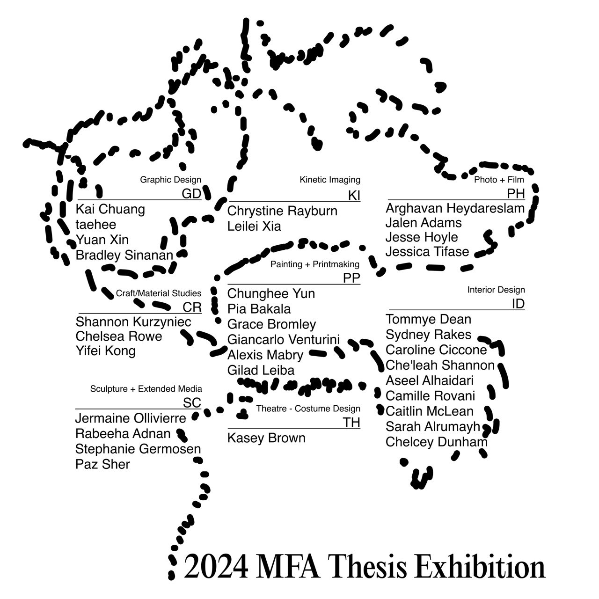
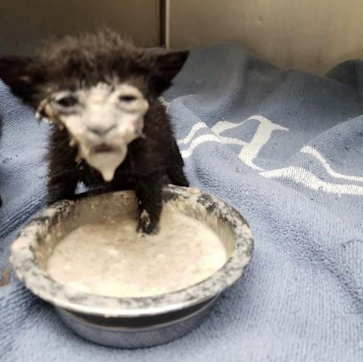

Identity, Print, Website2024
The project is about this this and this. It delves into this this and this. Made with this this and this


This fucking cat yo
Identity, Print, Website2024
The project is about this this and this. It delves into this this and this. Made with this this and this
